Dành cho giáo viên
Theo dõi lớp
| Học sinh / Nhóm | Đã nộp | Cập nhật |
|---|
Bước 1
1 Khởi động
Khám phá Hình ảnh khởi động
Trò chuyện Cùng An, Minh và Khoa
Đoạn trò chuyện gợi mở (không có trong SGK)
An: Tớ giúp mẹ ghi chi tiêu vào bảng tính, nhưng hay gõ nhầm tên khoản chi.
Minh: Có lần tớ còn gõ nhầm số tiền thành số âm.
Khoa: Dùng công cụ xác thực dữ liệu, bảng tính sẽ chặn ngay những dữ liệu sai!
Minh: Có lần tớ còn gõ nhầm số tiền thành số âm.
Khoa: Dùng công cụ xác thực dữ liệu, bảng tính sẽ chặn ngay những dữ liệu sai!
Khởi động Dự án Quản lí tài chính gia đình
Ở các lớp trước, em đã biết sử dụng các công cụ cơ bản của phần mềm bảng tính để giải quyết bài toán trong thực tế. Trong chủ đề này, em sẽ tiếp tục tìm hiểu và sử dụng các công cụ nâng cao của phần mềm bảng tính để giải quyết bài toán thực tế (bài toán quản lí tài chính gia đình) bằng cách hoàn thành một dự án nhỏ (dự án Quản lí tài chính gia đình). Dự án gồm các nội dung sau đây: xây dựng cấu trúc của bảng tính cho bài toán quản lí tài chính gia đình; sử dụng một số công cụ cơ bản và nâng cao của phần mềm bảng tính để giải quyết bài toán. Em hãy khám phá kiến thức để thực hiện dự án nhé.
Ghi bài Khởi động
Sau khi thầy cô chốt, em chép nội dung dưới đây vào vở.
Bước 2 · Hình thành kiến thức mới
2.1 Công cụ xác thực dữ liệu
Hoạt động 1 Xây dựng cấu trúc bảng tính
Dựa trên hiểu biết về những khoản chi tiêu của gia đình, em hãy cho biết: 1. Chi tiêu gia đình gồm những khoản mục gì? 2. Nêu cấu trúc một bảng tính điện tử quản lí tài chính mà em thấy phù hợp với gia đình em.
Đọc hiểu a) Sử dụng bảng tính để quản lí tài chính gia đình
Đọc mục 1a (SGK trang 34). Ưu điểm nổi bật của phần mềm bảng tính là xử lí dữ liệu tự động. Sử dụng chương trình bảng tính để quản lí tài chính sẽ giúp kiểm soát được tình hình tài chính một cách cụ thể, trực quan, từ đó điều chỉnh chi tiêu sao cho phù hợp với thu nhập gia đình và mục tiêu phát triển. Có nhiều cách khác nhau để quản lí tài chính gia đình hiệu quả. Ví dụ: lên kế hoạch chi tiết cho từng khoản chi tiêu, theo dõi ngân sách định kì, quản lí các khoản tiết kiệm và đầu tư,… Mỗi gia đình lại có các khoản mục tài chính khác nhau. Các khoản mục đó thường được phân thành hai loại là Thu và Chi. Do vậy, thông tin lưu trữ trong bảng tính điện tử quản lí tài chính gia đình sẽ gồm ít nhất hai loại đó. Ví dụ về các khoản thu, chi thường có của một gia đình được minh hoạ ở Hình 9a.1.
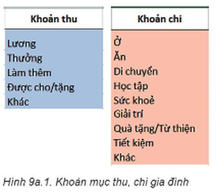
Đọc hiểu b) Công cụ xác thực dữ liệu
Đọc mục 1b (SGK trang 35–36). Khi dùng bảng tính để quản lí tài chính gia đình, em có thể lưu trữ dữ liệu Thu và Chi trên cùng một trang tính hoặc ở hai trang tính khác nhau. Hình 9a.2 minh hoạ trang tính Chi tiêu ghi lại các khoản chi của một gia đình (các khoản thu được lưu ở trang tính Thu nhập). Trong Hình 9a.2, em có thể thấy danh sách các khoản chi được lưu ở cột F. Khi cập nhật thông tin về khoản chi cho dữ liệu ở cột B, em chỉ cần chọn trong danh sách đã có. Để hạn chế loại dữ liệu hoặc giá trị của dữ liệu khi nhập vào ô tính, em sử dụng công cụ xác thực dữ liệu (Data Validation). Hình 9a.3 minh hoạ một ví dụ khác cần sử dụng công cụ này khi cập nhật dữ liệu.
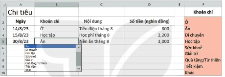
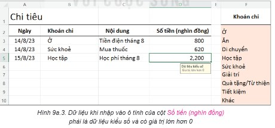
Khám phá trên bảng tính mô phỏng (đã đặt sẵn xác thực dữ liệu như Hình 9a.2, 9a.3): chọn một ô từ B5 đến B10, bấm nút ▼ để chọn khoản chi; chọn một ô cột D để xem thông báo, rồi thử nhập -100 hoặc abc.
Để sử dụng công cụ xác thực dữ liệu, trong nhóm lệnh Data Tools của dải lệnh Data, chọn Data Validation (Hình 9a.4). Hộp thoại Data Validation xuất hiện. Tại ô Allow trong thẻ Settings, em lựa chọn kiểu dữ liệu hoặc giá trị dữ liệu cho phù hợp với yêu cầu của từng bài toán cụ thể (Hình 9a.5). Ý nghĩa của mỗi kiểu dữ liệu hoặc giá trị dữ liệu ở Hình 9a.5 được giải thích trong Bảng 9a.1.
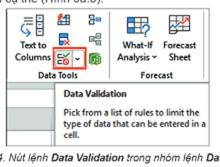
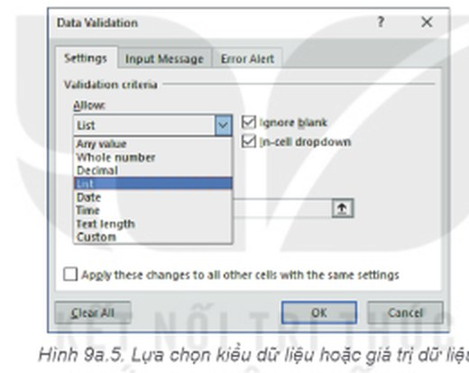
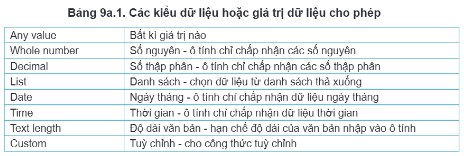
Câu hỏi SGK trang 36
Trang tính Thu nhập trong Hình 9a.6 lưu dữ liệu về các khoản thu của gia đình. Em hãy quan sát Hình 9a.6 và cho biết dữ liệu ở cột B cần được thiết lập để thoả mãn điều kiện xác thực nào.
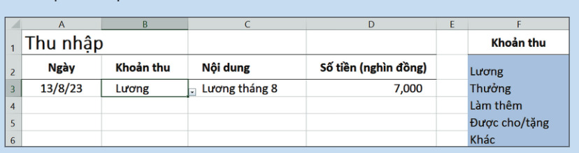
Ghi bài 1. Công cụ xác thực dữ liệu
Sau khi thầy cô chốt, em chép nội dung dưới đây vào vở.
Bước 2 · Thực hành
2.2 Thực hành: Sử dụng công cụ xác thực dữ liệu để tạo bảng tính quản lí tài chính gia đình
Nhiệm vụ 1, 2 TaiChinhGiaDinh.xlsx
Nhiệm vụ 1: Tạo bảng tính có trang tính Chi tiêu theo mẫu trong Hình 9a.2. Sử dụng công cụ xác thực dữ liệu cho các khoản chi của gia đình. Hướng dẫn (Microsoft Excel 2016): a) Tạo trang tính lưu các khoản chi: khởi động phần mềm bảng tính; đặt tên cho trang tính hiện hành là Chi tiêu; tạo bảng và nhập dữ liệu khoản chi (cột F) như minh hoạ ở Hình 9a.7. b) Sử dụng công cụ xác thực dữ liệu thuộc danh sách cho trước: để dữ liệu ở mỗi ô của cột B là một mục trong danh sách cho trước ở cột F: chọn các ô của cột B để nhập dữ liệu thoả mãn điều kiện xác thực, ví dụ các ô từ B3 đến B10; trong nhóm lệnh Data Tools của dải lệnh Data, chọn Data Validation, hộp thoại Data Validation xuất hiện; trong thẻ Settings, nhập yêu cầu xác thực dữ liệu cho từng tiêu chí: Allow: dữ liệu nhập vào cột Khoản chi cần thuộc danh sách cho trước, vì vậy em chọn giá trị là List để chọn dữ liệu từ danh sách thả xuống; Source: là vùng dữ liệu chứa danh sách; chọn vùng dữ liệu chứa danh sách các khoản chi là F2:F10, khi đó địa chỉ của vùng được đưa vào ô Source (Hình 9a.8); chọn OK để hoàn thành công việc. Nhập dữ liệu cho trang tính, trong đó dữ liệu cột B được lấy từ danh sách thả xuống (Hình 9a.2). Lưu tệp bảng tính với tên TaiChinhGiaDinh.xlsx.
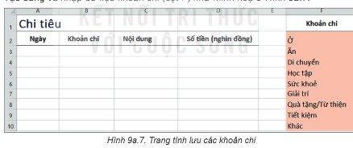
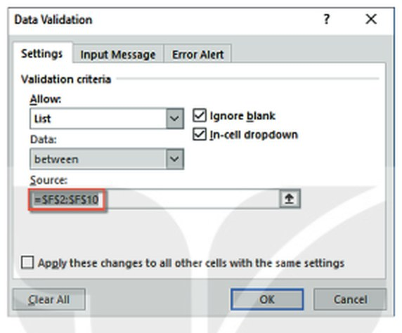
Nhiệm vụ 2: Sử dụng công cụ xác thực dữ liệu để xác thực cho dữ liệu cột Số tiền (nghìn đồng) (cột D) chỉ chấp nhận kiểu số lớn hơn 0 và yêu cầu này hiển thị trên màn hình khi nhập dữ liệu như minh hoạ ở Hình 9a.3. Hướng dẫn: chọn trang tính Chi tiêu; chọn vùng sẽ nhập dữ liệu của cột Số tiền (nghìn đồng), ví dụ vùng D3:D10; chọn Data/Data Tools/Data Validation, hộp thoại Data Validation xuất hiện; trong thẻ Settings, nhập yêu cầu xác thực dữ liệu như Hình 9a.9; trong thẻ Input Message, nhập nội dung thông báo như Hình 9a.10; trong thẻ Error Alert, nhập nội dung thông báo lỗi khi nhập dữ liệu như Hình 9a.11. Nhập thêm dữ liệu vào bảng. Nếu em nhập dữ liệu không đúng với yêu cầu xác thực của ô thì màn hình sẽ xuất hiện thông báo như Hình 9a.12. Lưu tệp.
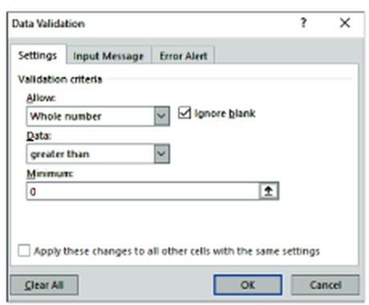
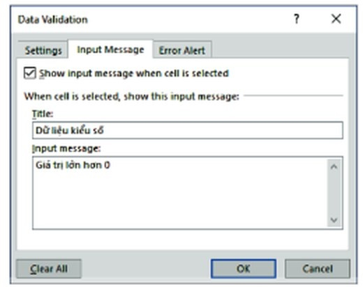
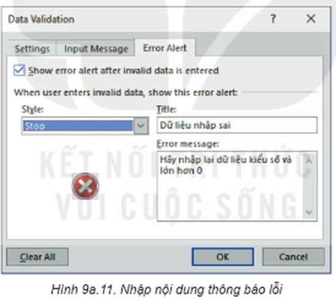
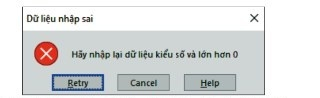
Làm trên bảng tính mô phỏng: nháy đúp vào tên trang tính để đổi tên; kéo chọn B3:B10 rồi bấm ✅ Data Validation; ở ô Source gõ =$F$2:$F$10. Làm tương tự với D3:D10 (ba thẻ Settings, Input Message, Error Alert).
Ghi bài 2. Thực hành
Sau khi thầy cô chốt, em chép nội dung dưới đây vào vở.
Bước 3
3 Luyện tập
Luyện tập Trang tính Thu nhập
1. Mở tệp bảng tính TaiChinhGiaDinh.xlsx và thực hiện các yêu cầu sau: a) Tạo thêm một trang tính mới, đặt tên là Thu nhập. b) Nhập dữ liệu khoản thu (cột F), nhập nội dung các khoản thu của gia đình như minh hoạ ở Hình 9a.6, trong đó sử dụng công cụ xác thực dữ liệu để khoản thu ở cột B được lấy từ danh sách ở cột F.
2. Mở trang tính Thu nhập trong tệp bảng tính TaiChinhGiaDinh.xlsx (Hình 9a.13). Sử dụng công cụ xác thực dữ liệu để hạn chế kiểu dữ liệu và giá trị dữ liệu cho cột Số tiền (nghìn đồng) tương tự như yêu cầu của trang tính Chi tiêu. Hãy nhập thêm ít nhất ba hàng dữ liệu vào bảng.
2. Mở trang tính Thu nhập trong tệp bảng tính TaiChinhGiaDinh.xlsx (Hình 9a.13). Sử dụng công cụ xác thực dữ liệu để hạn chế kiểu dữ liệu và giá trị dữ liệu cho cột Số tiền (nghìn đồng) tương tự như yêu cầu của trang tính Chi tiêu. Hãy nhập thêm ít nhất ba hàng dữ liệu vào bảng.
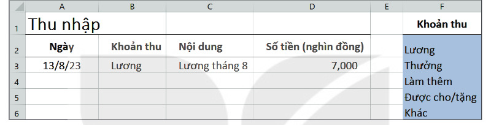
Ghi bài Luyện tập
Sau khi thầy cô chốt, em chép nội dung dưới đây vào vở.
Bước 4
4 Vận dụng
Vận dụng Kinh phí Triển lãm tin học
Em hãy tạo bảng tính để quản lí tài chính cho dự án Triển lãm tin học. Nhập dữ liệu các khoản thu, chi của dự án. Trong đó, các khoản thu (ví dụ như: kinh phí tài trợ, quỹ lớp,…) được lưu ở một trang tính (Hình 9a.14), các khoản chi cho triển lãm (ví dụ như: mua văn phòng phẩm, in tài liệu,…) được lưu ở một trang tính khác (Hình 9a.15). Hãy sử dụng công cụ xác thực dữ liệu để việc nhập dữ liệu các khoản thu, chi được chính xác. Lưu tệp bảng tính với tên KinhPhiTrienLam.xlsx.
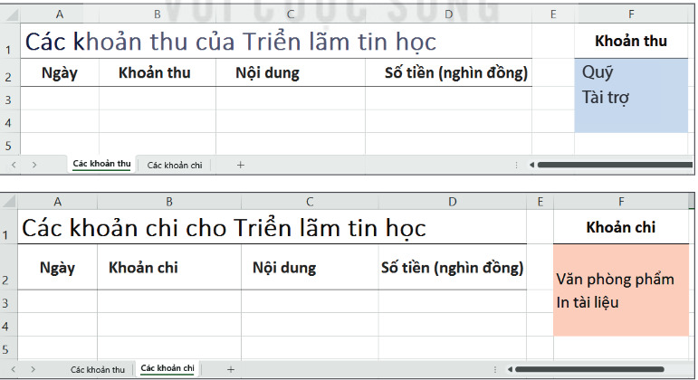
Ghi bài Vận dụng
Sau khi thầy cô chốt, em chép nội dung dưới đây vào vở.